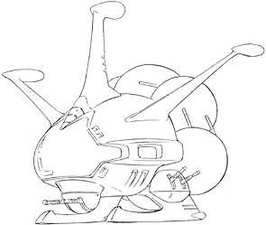

| Sodon |
|
|  | |
General and Technical Data |
|
|
Unit Type: armed tugboat Operator: Many different parties Propulsion system: rocket thrusters Hangar capacity: 1 cargo, 3 mobile suits Launch catapults: 0 Fixed armaments: 3x AA machinegun turret Technical and Historical Notes Originally designed to support the Zeon Republics then very small number of battleships, but very large number of mobile suits, the Sodon is simply an armed tugboat, designed to ferry mobile suits into the field with as small a craft as physically possible. As the buildup for the war continued however, the number of Musai's, Papuas and Gwazines in service increased to meet demands, and the need for the Sodon declined. Used during the Lourm campaign, it fell out of use shortly after, and is now almost nonexistant in the Zeon duchy. However, given the uncertain times the remaining colonists live in, an armed transport craft has become something very desired, and several have been purchased by the Riah militia and private investors. |
 RPG quick stats sheet
RPG quick stats sheet